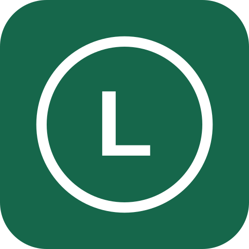

Apparaten en meldingenBeheer Zigbee-knoppen, deursensoren, meldteksten, een automatisch weekschema en handmatige beveiliging.
Pushmeldingen
Stel de algemene titel, appnaam en standaardtekst in. De bestaande meldteksten per knop en deur blijven gelden; pas die hieronder bij het apparaat aan.
iOS bepaalt zelf de systeemtekst rond een melding. Een woord zoals ‘from’ dat iOS toevoegt, kan LCP niet verwijderen. Een korte appnaam, bijvoorbeeld LCP, houdt de melding overzichtelijk.
Logo en app-icoon
Nog geen bestand gekozen
Maximaal 2 MB en 4096 bij 4096 pixels. Het logo wordt passend gemaakt met een witte achtergrond. Het logo is openbaar zichtbaar; upload geen vertrouwelijke informatie.
Open LCP op elk apparaat na een wijziging. iOS kan het bestaande beginschermicoon bewaren. Voor een nieuw icoon moet je de webapp mogelijk opnieuw toevoegen en pushmeldingen opnieuw inschakelen. De huidige registratie wordt door het opslaan niet gewijzigd.
Pushinstellingen laden…
Voorbeeld pushmelding
Voorbeeld van de inhoud; de exacte weergave en het geluid worden door iOS bepaald. De test gaat uitsluitend naar apparaten van je eigen ingelogde account, ook als je hier op een laptop werkt. Er wordt geen algemene oproep aangemaakt.
Deursensoren op de werklaptop
Voor openen, sluiten en de vijfminutenwaarschuwing is de bijgewerkte Windows-worker nodig. De vier sensoren staan hieronder klaar; de reserve staat uit.
Gekoppelde apparaten
Koppel een nieuwe sensor eerst in Zigbee2MQTT op de laptop. De apparaatnaam moet exact overeenkomen met de naam in Zigbee2MQTT. Bij bestaande apparaten blijft deze koppeling vaststaan; de naam in LCP kun je wel aanpassen.
Apparaatinstellingen
Deurbeveiliging
Gebruik {minuten} om automatisch de ingestelde tijd in te vullen.
Automatisch weekschema
Per tijdvak kies je dagen en begin/eindtijd. Als de eindtijd eerder is dan de begintijd, loopt de periode door tot de volgende dag. 00:00 tot 00:00 is een volledige dag. Tijdzone: Nederland.
Hoe werkt het?
Knop: een korte druk verstuurt de ingestelde tekst. Deur: meldingen bij openen en sluiten volgen de gekozen meldtijden. Een waarschuwing na onafgebroken openstaan wordt geannuleerd zodra de deur sluit. Met de aparte optie kies je of ook deze waarschuwing de meldtijden volgt.
Wijzigingen in meldteksten en beveiligingsstand worden door de bijgewerkte laptop-worker ongeveer iedere 15 seconden opgehaald. Zonder die worker blijven de huidige SONOFF-meldingen ongewijzigd.